Mode d'emploi
CARNET · FIDÉLITÉ · AGENDA
← Ouvrir l'appPour Alice
Fini les cartes en carton qui se perdent et le stock qui s'épuise. Tes clientes, leurs petites habitudes et leurs tampons sont maintenant dans ta poche, rangés et à l'abri. Prends ton temps : tout se rattrape, rien ne se perd.
Avec toute mon affection, ton beau-frère
Mettre l'app sur ton téléphone
À faire une seule fois. Ensuite, l'app a son icône comme les autres et s'ouvre même sans Internet.
Ouvre alice.kump.fr dans Safari (iPhone) ou Chrome (Android).
En haut, appuie sur le bouton Installer.
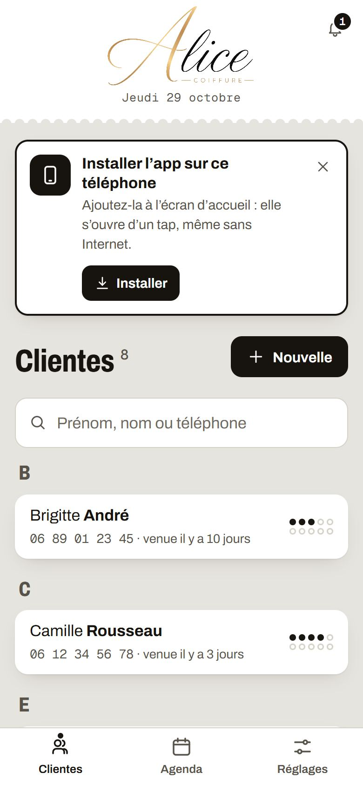
Sur iPhone, un petit guide s'ouvre. Suis les 3 étapes : Partager (le carré avec une flèche, en bas de Safari) → Sur l'écran d'accueil → Ajouter.
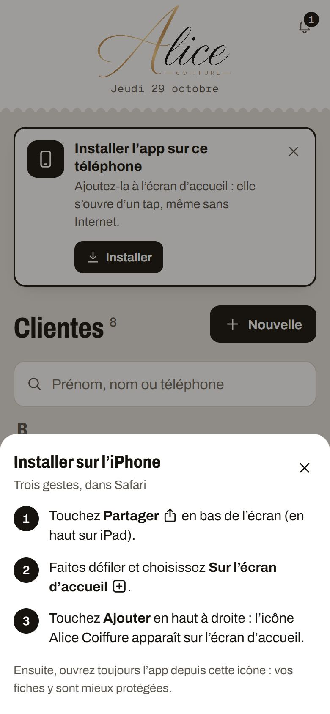
AstuceSur Android, c'est encore plus simple : le téléphone te demande juste de confirmer.
ImportantEnsuite, ouvre toujours l'app avec son icône, pas par Internet : tes fiches y sont mieux protégées.
Te connecter (une seule fois)
C'est ce qui met tes fiches à l'abri en ligne. Si un jour tu changes de téléphone, tu retrouves tout.
En bas, appuie sur Réglages, puis sur Sauvegarde.
Tape ton e-mail et ton mot de passe, puis Se connecter.
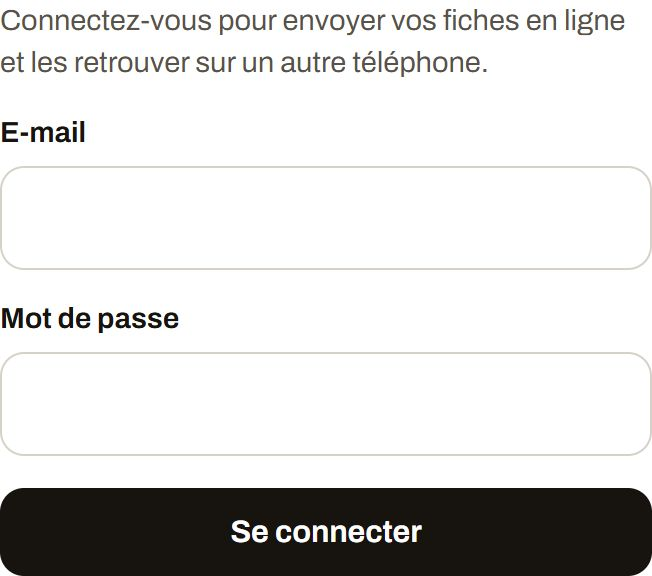
À retenirTu ne le fais qu'une fois : le téléphone s'en souvient. Garde bien ton mot de passe noté quelque part, c'est la clé de tes fiches.
Ajouter une cliente
Le plus simple : crée la fiche quand la cliente vient, avec sa vieille carte en carton sous les yeux.
Sur l'écran Clientes, appuie sur + Nouvelle.
Écris son prénom, son nom et son téléphone (pour lui envoyer les rappels).
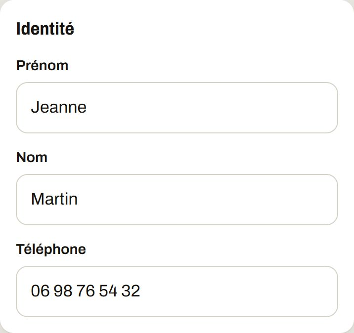
Note ses cheveux (appuie sur les petits mots tout prêts) et tes notes : allergies, couleur, préférences…
Avec les boutons − et +, mets le nombre de tampons qu'elle avait déjà sur sa carte en carton.
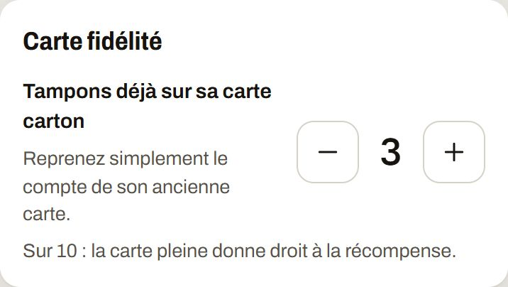
En bas, appuie sur Créer la fiche. C'est tout !
Retrouver une cliente
Sur l'écran Clientes, tape les premières lettres de son prénom, de son nom… ou quelques chiffres de son téléphone.
Appuie sur son nom : sa fiche s'ouvre.
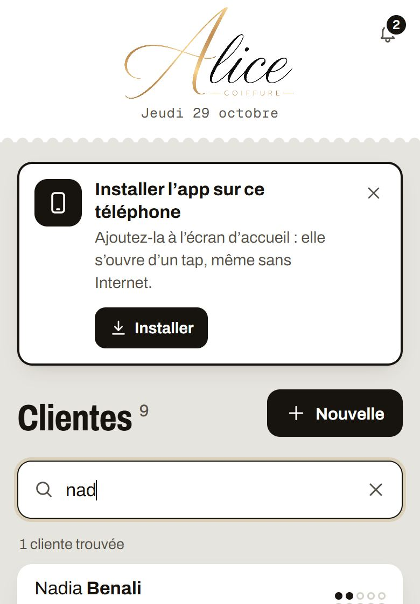
AstucePas besoin des accents ni des majuscules : « helene » trouve « Hélène ». Les petits points à droite montrent sa carte fidélité.
Tamponner la carte fidélité
Ta carte en carton, en mieux : chaque passage fait un vrai petit trou.
Ouvre la fiche de la cliente.
Si tu veux, choisis la prestation du jour (ce n'est pas obligatoire).
Appuie sur Poinçonner un passage.
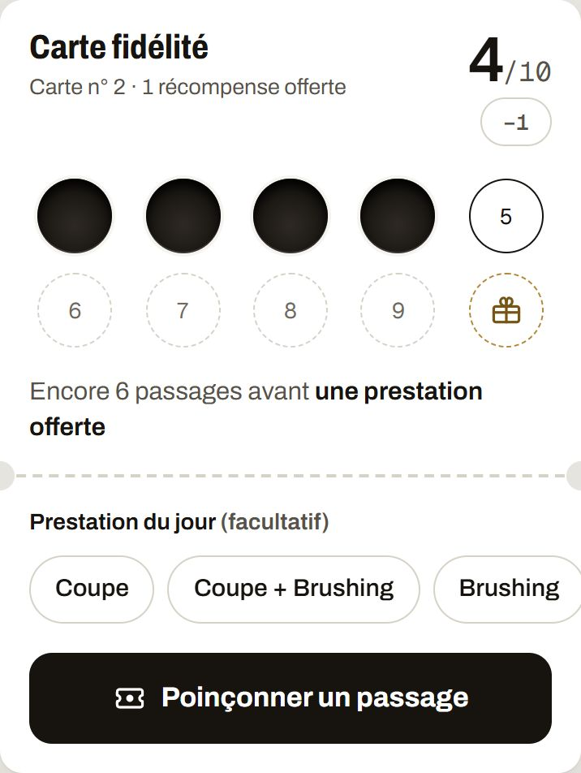
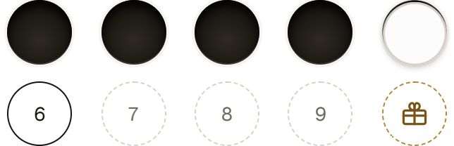
Tu t'es trompée ? Pas de panique :
juste après, appuie sur Annuler dans le message noir en bas ;
plus tard, appuie sur le petit bouton −1 sous le compteur.
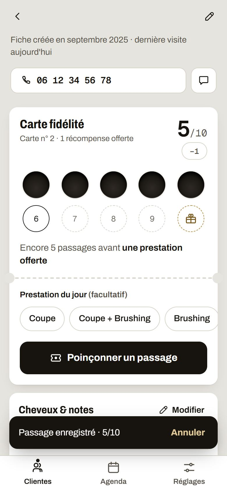
Offrir la récompense
Quand les 10 trous sont faits, la carte devient dorée.
Offre sa récompense à ta cliente.
Appuie sur Offrir la récompense, puis confirme.
Une nouvelle carte toute neuve commence.
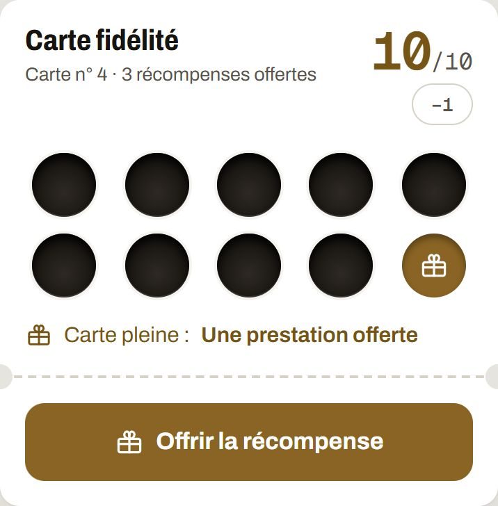
AstuceTu peux changer la récompense (ou le nombre de tampons) dans Réglages → Carte fidélité.
Prendre un rendez-vous
En bas, appuie sur Agenda, puis sur + Rendez-vous.
Tape le nom de la cliente et appuie sur son nom dans la liste.
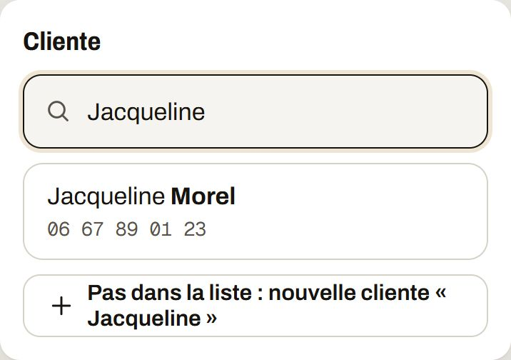
Choisis la prestation : la durée se met toute seule. (Ce sont tes prestations : tu les changes dans Réglages → Prestations, voir chapitre 11.)
L'app te propose déjà les prochains créneaux libres. Appuie sur celui qui te va.
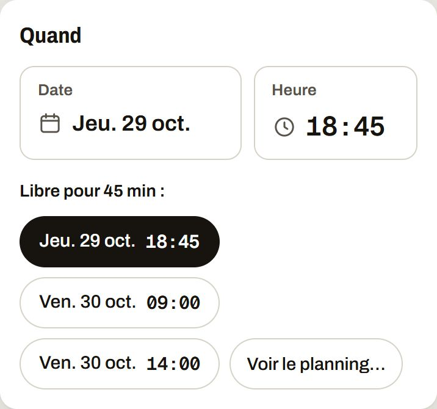
Tu veux voir ta semaine ? Appuie sur la Date : un calendrier s'ouvre, avec tes rendez-vous et les heures libres. Les jours rayés sont tes jours de repos.
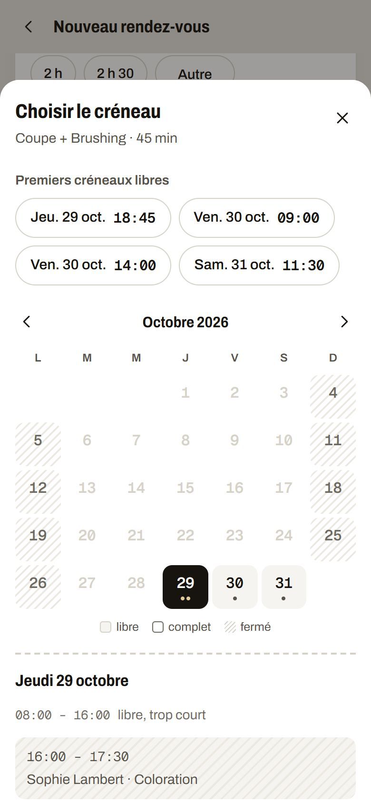
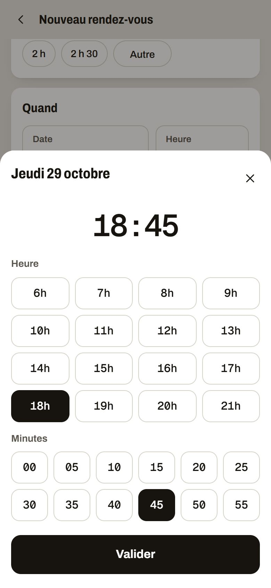
Appuie sur Ajouter à l'agenda.
Une nouvelle cliente au téléphone ? Tape simplement son nom : si elle n'existe pas encore, un petit formulaire apparaît. Sa fiche est créée avec le rendez-vous, tu la compléteras plus tard.
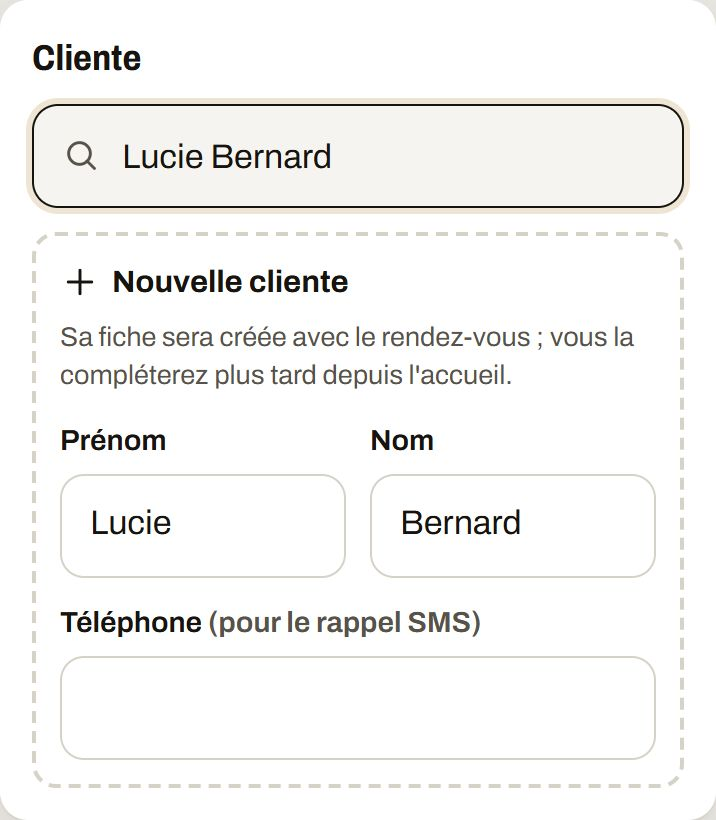
Durée spéciale ?Dans la case Autre, tape 2 pour 2 heures, 2.10 pour 2 h 10, ou 45 pour 45 minutes.
Ta journée dans l'agenda
La cliente du moment est entourée de noir. En bas à gauche, tu vois sa carte fidélité (ex. 9/10).
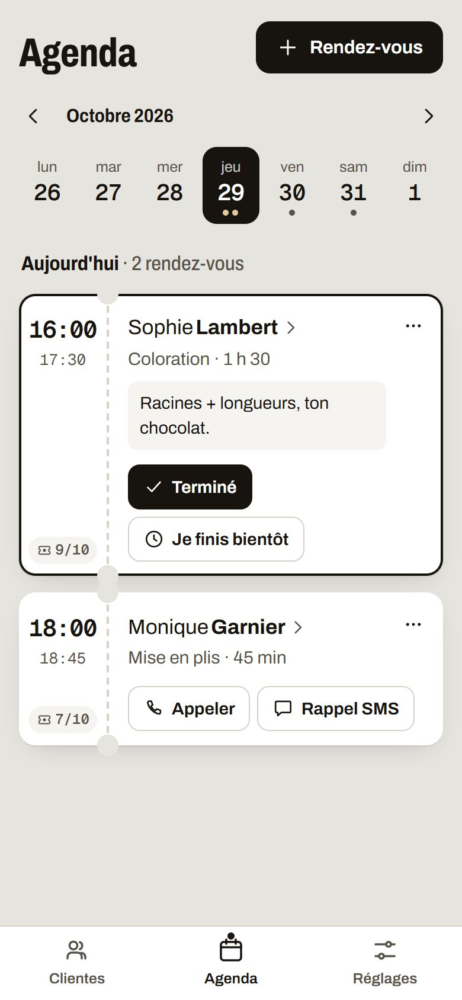
Tu as fini ? Appuie sur Terminé. L'app te demande si tu veux tamponner sa carte : Oui, poinçonner.
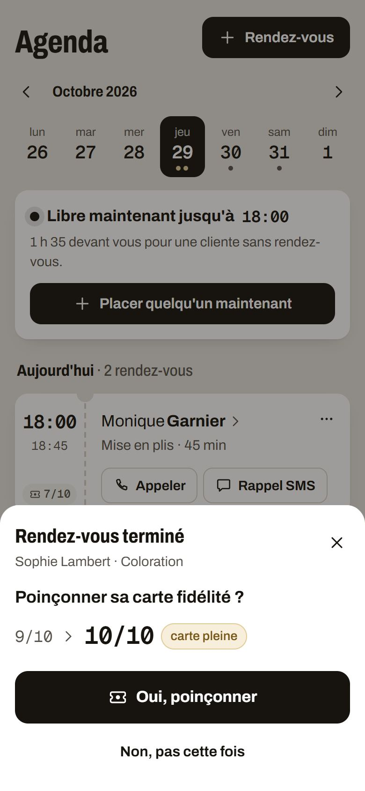
Le téléphone sonne et tu as bientôt fini ? Appuie sur Je finis bientôt, choisis dans combien de minutes (5, 10, 15…), et le rendez-vous de la personne s'ouvre déjà à la bonne heure.
Une place se libère ? Un bandeau « Libre maintenant » apparaît en haut : Placer quelqu'un maintenant.
Les 3 petits points ··· d'un rendez-vous servent à le modifier ou à l'annuler (si la cliente a prévenu).
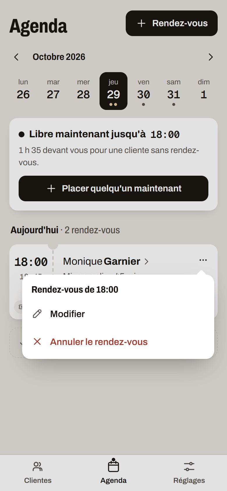
Une cliente n'est pas venue ?Elle n'a pas prévenu ? Dans ce même menu, une fois l'heure passée, choisis « Pas venue, sans prévenir » (en petit, tout en bas). C'est noté sur sa fiche.
RappelLe bouton Rappel SMS prépare un message tout écrit pour ta cliente : tu n'as plus qu'à l'envoyer.
La petite cloche
En haut à droite de l'accueil, la cloche montre un chiffre quand quelque chose t'attend :
une récompense à offrir (carte pleine) ;
une fiche à compléter (créée en prenant un rendez-vous).
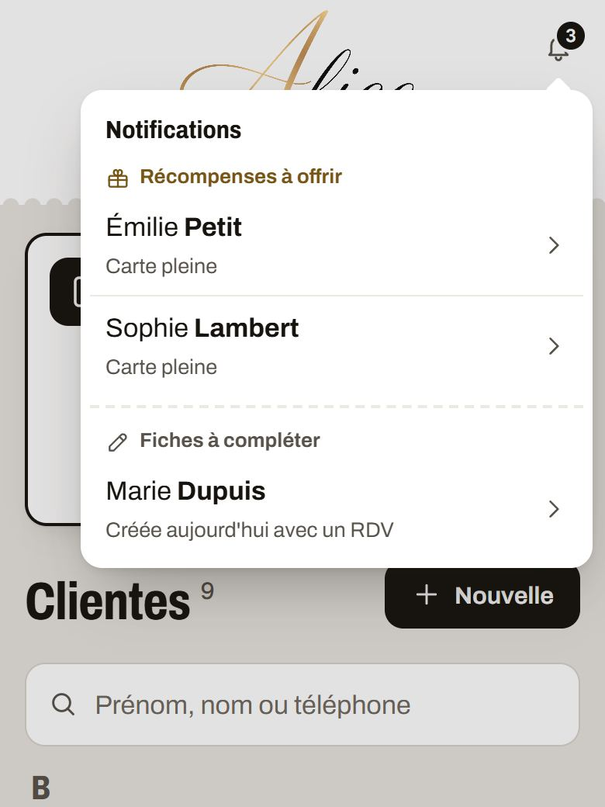
Appuie sur un nom pour y aller directement.
Une fiche effacée ? Un nouveau téléphone ?
Rien n'est jamais vraiment perdu.
Tu as supprimé une fiche par erreur ? Va dans Réglages → Sauvegarde → Corbeille et appuie sur Restaurer. Elle revient avec ses tampons et ses rendez-vous.
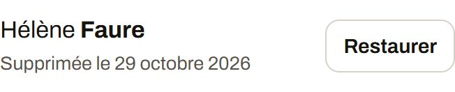
Nouveau téléphone ? Installe l'app (chapitre 1), connecte-toi (chapitre 2) : toutes tes clientes reviennent toutes seules.
Pas d'Internet au salon ?Aucun souci : tout est enregistré dans ton téléphone, et la sauvegarde se fait toute seule dès que le réseau revient.
Tes réglages
En haut, tes chiffres du mois : passages, clientes venues, récompenses. En dessous :
Salon : tes jours et horaires de travail (pour que l'app te propose les bons créneaux).
Prestations : ce que tu proposes et combien de temps ça prend.
Carte fidélité : le nombre de tampons et la récompense.
Sauvegarde : la connexion, la corbeille.
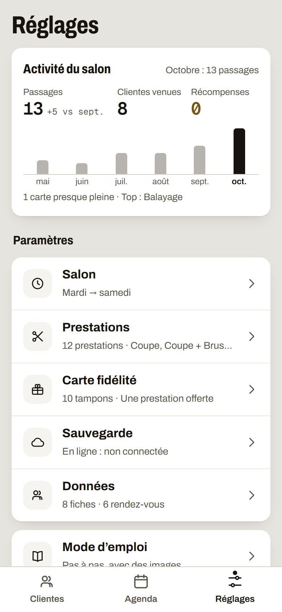
Tes prestations : au départ, l'app propose une liste toute prête (Coupe, Coloration, Balayage…). Tu la mets à ta façon :
Va dans Réglages → Prestations.
Appuie sur une prestation pour changer son nom ou sa durée, ou pour la supprimer.
Pour en créer une : + Ajouter une prestation, écris son nom, choisis sa durée, puis Enregistrer.
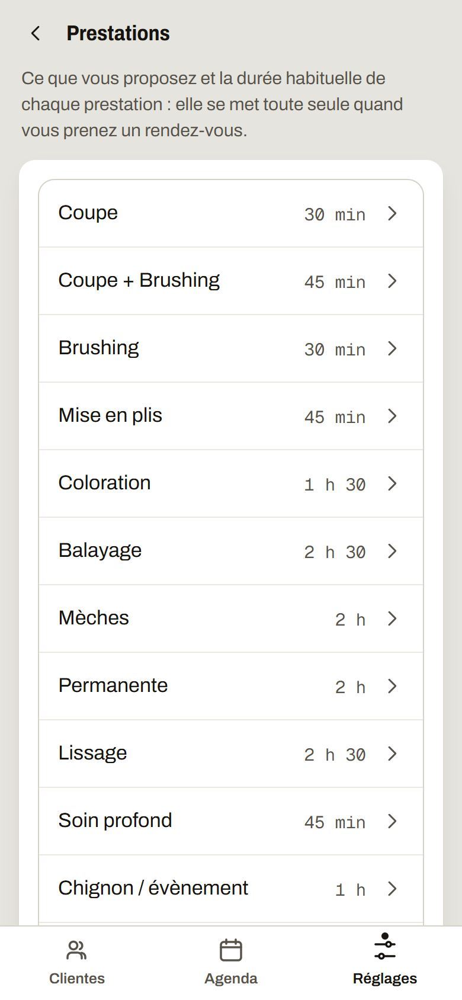
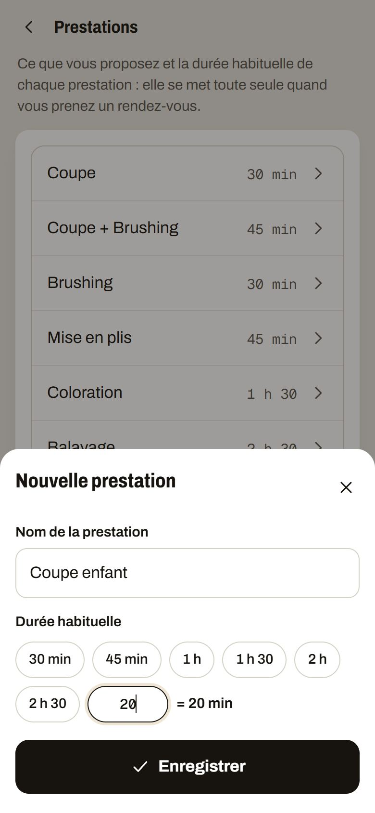
Une durée qui n'est pas dans les boutons ?Tape-la dans la case Autre : 20 pour 20 minutes, 1.15 pour 1 h 15. Et si tu t'es perdue, « Revenir à la liste d'origine » remet tout comme au début.
Le mémo à garder en tête
- 1Une cliente arrive → Clientes, tape son nom.
- 2Elle repart → Poinçonner un passage
- 3Carte dorée → Offrir la récompense
- 4Un appel → Agenda, puis + Rendez-vous
- 5Une erreur → Annuler, −1 ou la Corbeille. Tout se rattrape !
Une question ? Appelle ton beau-frère 😉
← Ouvrir l'app